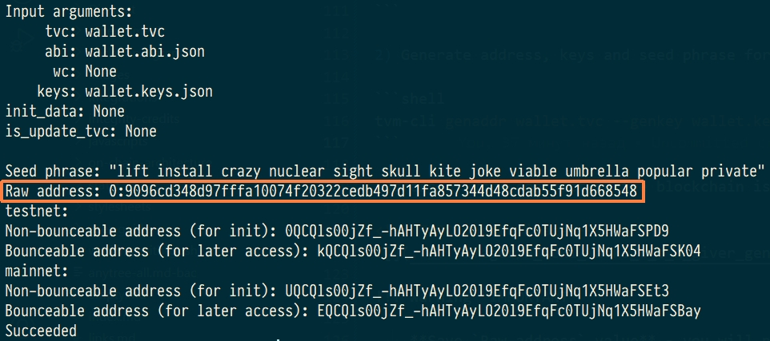
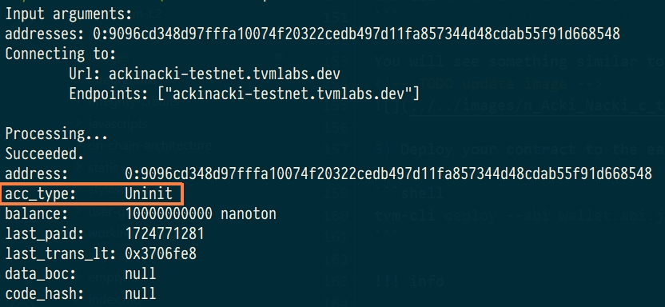
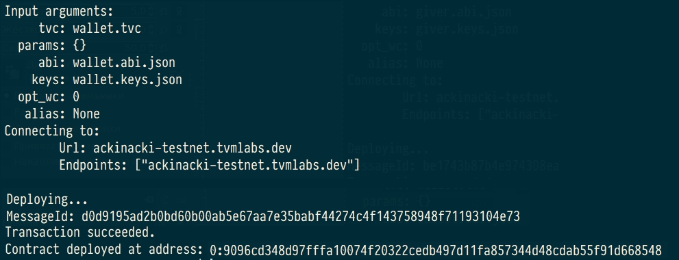
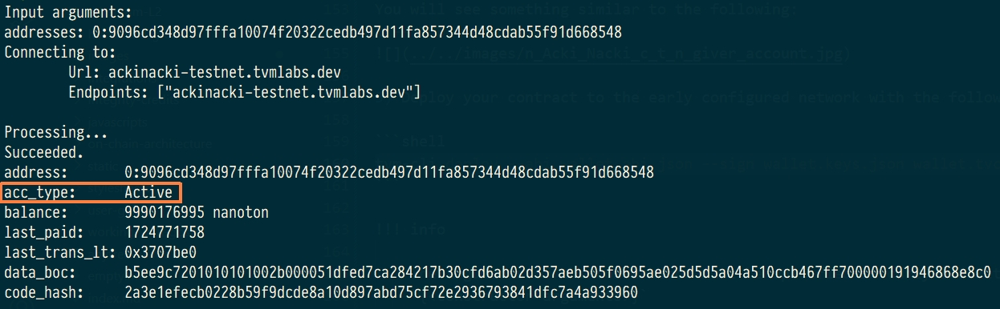

Quick start for TVM SDK JavaScript
Prerequisites
- Rust v1.76+
- Node.js v18.19.1
- Python 3
- Python 3 setuptools
This demo app implements the following scenario:
-
Creates and initializes an instance of the SDK client;
-
Deploys the
helloWorldcontract:2.1 Generates key pair for the contract;
2.2 Calculates future address of the contract;
2.3 Sends to the future address of the contract some tokens required for deploy;
2.4 Deploys the
helloWorldcontract; -
Gets account info and print balance of the
helloWorldcontract -
Runs account's get method
getTimestamp -
Executes
touchmethod for newly deployedhelloWorldcontract -
Runs contract's get method locally after account is updated
-
Sends some tokens from
helloWorldcontract to a random account
Info
For testing your developed applications, you can use Acki Nacki development blockchain
at ackinacki-testnet.tvmlabs.dev
To replenish the balance of wallet-contract, please contact us in Channel on Telegram.
We will do all the work in this quick start in a separate ~/test-sdk folder.
Let's create it:
Build core TVM library for Node.js
1.Clone the repository to a separate directory:
2.Run build:
As a result, the builded binding tvmsdk.node will be placed into the folder ~/test-sdk/tvm-sdk-js/packages/lib-node.
Create a wallet
By this point, you should have deployed a wallet from which the balances of your demo contracts will be replenished.
Create a separate folder for it:
And download the wallet code file and the abi file and put it in the wallet folder.
Then deploy the contract to Acki Nacki development blockchain
at ackinacki-testnet.tvmlabs.dev:
1) Make sure TVM-CLI is in $PATH:
2) Configure network:
3) Generate address, keys and seed phrase for your wallet:
Address of your contract in the blockchain is located after Raw address:

IMPORTANT
Save Raw address value - you will need it to deploy your contract and to work with it.
We will refer to it as <YourAddress> below.
Seed phrase is also printed to stdout.
Key pair will be generated and saved to the file wallet.keys.json.
Danger
Write your seed phrase down and store it somewhere safe, and never share it with anyone. Avoid storing it in plain text or screenshots, or any other non-secure way. If you lose it, you lose access to your assets. Anyone who gets it, gets full access to your assets.
Also, save the file with a pair of keys in a safe place.
4) Request test tokens
Note
Acki Nacki deploy is fee-based, so your new contract will be charged for this.
You will need to request some tokens to the address before the actual deployment.
Contracts take value in nanotokens.
(You will need approximately 10 tokens to deploy)
Please contact us in Channel on Telegram and specify the <YourAddress>.
5) Check the state of the pre-deployed contract. It should be Uninit:
You will see something similar to the following:

5) Deploy your contract to the early configured network with the following command:
Info
The arguments of the constructor must be specified in curly brackets:
{<constructor arguments>}

6) Check the contract state again. This time, it is should be Active.

Request test tokens for future use
To replenish your wallet, please contact us in Channel on Telegram.
You can find full source code of this contract and its artifacts here
Prepare demo application
1.Clone repository contains the demo application:
cd ~/test-sdk
git clone https://github.com/tvmlabs/sdk-examples.git
cd sdk-examples/js/nodejs/helloWorld
2.Configure wallet for using in the demo app:
To do this, in the demo folder, edit .env file with following content:
WALLET_ADDRESS=YOUR_WALLET_ADDRESS
WALLET_KEYS=FULL_PATH_TO_YOUR_WALLET_KEYS_FILE # should be absolute path
3.Install the packages @tvmsdk/core and @tvmsdk/lib-node for the demo application:
4.Replace the binary file in @tvmsdk/lib-node with an Acki Nacki-compatible one, which was builded early:
cp ~/test-sdk/tvm-sdk-js/packages/lib-node/tvmsdk.node ~/test-sdk/sdk-examples/js/nodejs/helloWorld/node_modules/@tvmsdk/lib-node/
Run it
Go to the folder with the demo application and run it:
You will see a result similar to the following:
wallet keys fname: /home/username/wallet/wallet.keys.json
Future address of helloWorld contract is: 0:90e7941f8eb4806097598e1653a97fc6f8951423e4f12b417d67b4b186633771
Transferring 1000000000 tokens from wallet to 0:90e7941f8eb4806097598e1653a97fc6f8951423e4f12b417d67b4b186633771
Success. Tokens were transferred
Deploying helloWorld contract
Success. Contract was deployed
helloWorld balance is 986483999
Run `getTimestamp` get method
`timestamp` value is {
value0: '0x0000000000000000000000000000000000000000000000000000000066cdf75f'
}
Calling touch function
Success. TransactionId is: c7b7cb19d4b7f4d56c854c593dfe68c4f2cfc508af6a766a5c841d2fbfde417a
Waiting for account update
Success. Account was updated, it took 0 sec.
Run `getTimestamp` get method
Updated `timestamp` value is {
value0: '0x0000000000000000000000000000000000000000000000000000000066cdf763'
}
Sending 100000000 tokens to 0:2b8436113a37866f5f8258f0e1645872a2a7168ef8b8115405de804a368477f8
Success. Target account will receive: 99000000 tokens
Normal exit
Source code
The source code of all the components used can be found here